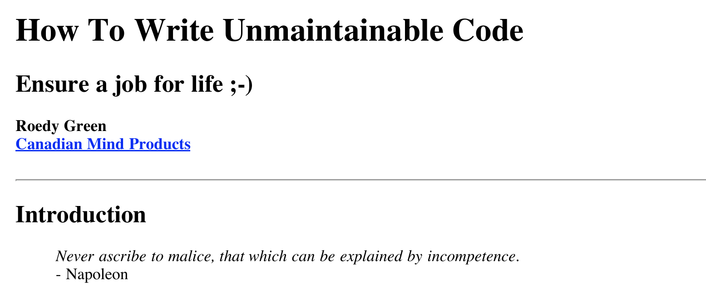
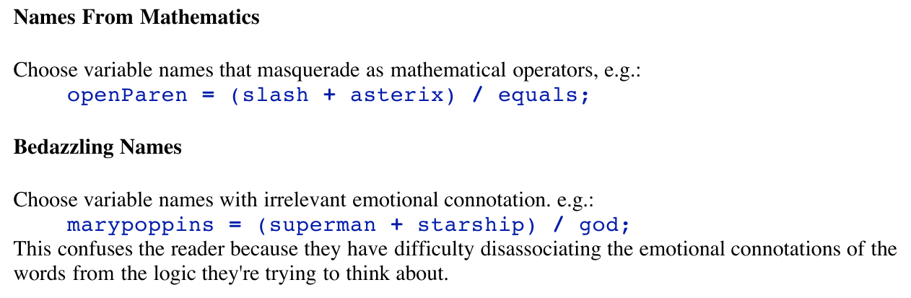
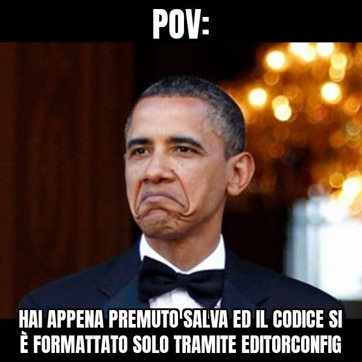
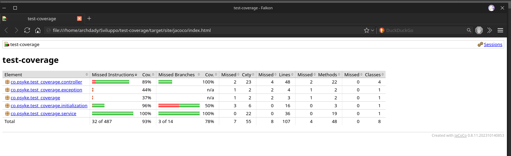
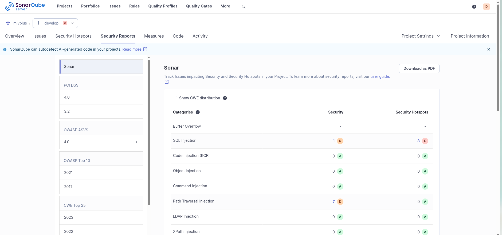
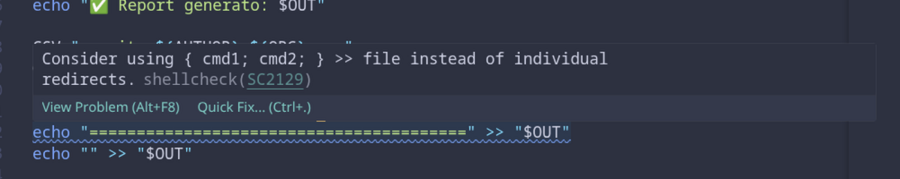

Il fatto che parta non è tutto
Editor Config
Prettier, ma anche Uglifier
Checkstyle
Linter
Test
Coverage
Sonarqube
An extra: Codacy
Esempi tool
A cura di Davide Galati (in arte PsykeDady)
davide.galati@brainylabs.it
psdady@msn.com
Link e info presentazione
- Potete trovare la presentazione all'indirizzo ildiavolovestesonarlint.surge.sh
- Con il tasto ESC avrete una panoramica di tutte le slide (non fatevi spoiler però!)
- Aggiungendo ?print-pdf all'indirizzo potrete avere una versione da stampare come pdf (dopo averla aperta stampate la pagina col browser).
- La presentazione si estende in orizzontale ma anche in verticale! Fare attenzione alle frecce a sinistra in basso.
- Se un codice non ha bug è un bene.
- Ma anche un progetto perfetto, se non è leggibile o mantenibile, lo possiamo buttare via.
- Esistono quindi delle buone pratiche per qualità e stile del codice.
- Esiste un libro, How To Write Unmaintainable Code, che ironicamente spiega come scrivere codice non mantenibile, ma è un buon punto di partenza per capire cosa non fare.


Code Style
- Editor Config
- prettier
- checkstyle
- Linter (Lato style)
Code Quality
- Linter (Lato quality)
- Coverage
- SonarQube
- esempi: Sonarlint
- esempi: ShellCheck
- Editor Config è un file di configurazione che permette di definire regole di formattazione del codice, come indentazione, spaziatura, fine linea, ecc.
- Anche se non è uno standard de-facto, è supportato da molti editor e IDE.
- Alcuni IDE applicano automaticamente le regole di Editor Config quando si salva un file, garantendo coerenza nel formato del codice (senza l'intervento manuale del programmatore).
- evita differenze inutili nei commit o strani conflitti

Esempio di file .editorconfig
root = true
[*]
end_of_line = lf
insert_final_newline = true
tab_width = 4
indent_style = space
indent_size = 4
# Override per file JavaScript e CSS
[*.{js,css}]
end_of_line = lf
insert_final_newline = true
indent_style = tab
indent_size = 4- Per Prettier si intende un formattatore di codice, sia a livello di categoria che come software a specifico.
- Supporta molti linguaggi e può essere integrato in molti editor e IDE.
- Molto utilizzato soprattutto per Javascript e json.
- Esiste anche il concetto di "prettyprinting" nei vari linguaggi per stampare log o dati in modo più leggibile, ad esempio con indentazione e spaziatura tramite istruzioni.
- Prima di Prettier
{"nome":"Davide","cognome":"Galati","eta":34}- Dopo Prettier
{
"nome": "Davide",
"cognome": "Galati",
"eta": 18
}ti rende così bello che ti abbassa l'età

- Rendere più bello un codice tuttavia, soprattutto nei linguaggi interpretati, degrada le prestazioni e occupa spazio.
- Esistono quindi dei software che fanno l'opposto, lo rendono "illegibile" ma più performante, come Uglifier per Javascript.
- In questo caso, però, è importante mantenere una versione "leggibile" del codice, magari con un suffisso come
.min.js, per poterlo manutenere in futuro. - L'utilizzo di un Uglifier è in genere integrato nei processi di build per versioni di produzione.
- Prima di Uglifier
function calcolaSomma(a, b) {
return a + b;
}- Dopo Uglifier
function a(a,b){return a+b}- Lo devo leggere, mantenere, versionare? Prettifier
- Lo deve scaricare il browser? Uglifier
- Domanda: Installi Bootstrap ...
- bootstrap.js
- bootstrap.min.js
- Cambiamo paradigma: andiamo su un tool che rende lo stile obbligatorio, non solo suggerito.
- Checkstyle è uno strumento per il linguaggio Java, consente di impostare delle regole di stile che il programmatore DEVE seguire.
- Permette di definire delle regole personalizzate e garantire una metodologia standard all'interno di un azienda.
- Può essere integrato sia nel processo di build (attraverso maven ad esempio) che in molti IDE, per segnalare immediatamente eventuali violazioni delle regole.
- Si parte normalmente dalle configurazioni del sito ufficiale
- Nella documentazione è possibile trovare molte regole predefinite, ma è anche possibile crearne di personalizzate.
- Una volta trovata la giusta configurazione è importante condividerle e conservarle.
Esempio di (pezzi di) file checkstyle.xml
<module name="Checker">
<property name="charset" value="UTF-8"/>
<!-- lunghezza massima delle righe -->
<module name="LineLength">
<property name="fileExtensions" value="java"/>
<property name="max" value="100"/>
</module>
<!-- obbliga le graffe negli if -->
<module name="NeedBraces">
<property name="tokens"
value="LITERAL_DO, LITERAL_ELSE, LITERAL_FOR, LITERAL_IF, LITERAL_WHILE"/>
</module>
<!-- naming delle classi -->
<module name="TypeName">
<property name="format" value="^[A-Z][a-zA-Z0-9]*$"/>
<property name="tokens" value="CLASS_DEF"/>
</module>
<!-- spazio attorno gli operatori -->
<module name="WhitespaceAround">
<property name="tokens"
value="ASSIGN, PLUS, MINUS, DIV, STAR, EQUAL, NOT_EQUAL"/>
</module>
</module>Esempio di violazione di checkstyle
// Violazione naming classi
public class myClass {
public static void main(String[] args) {
// Violazione spazi attorno agli operatori
int a=5+3;
// Violazione parentesi negli if
if(a>5)
System.out.println("a è maggiore di 5");
// Violazione lunghezza massima delle righe
System.out.println("Questa è una riga molto lunga che supera i 100 caratteri e quindi viola la regola di checkstyle");
}
}Esempio corretto
public class MyClass {
public static void main(String[] args) {
int a = 5 + 3;
if (a > 5) {
System.out.println("a è maggiore di 5");
}
String longLine =
"Questa è una riga "
+ "molto lunga che supera i 100 caratteri "
+ "ma non viola la regola di Checkstyle "
+ "perché è stata spezzata in più righe";
}
}Checkstyle non è opzionale
- Non è un suggerimento
- Non è gusto personale
- Non è opinione
- È una regola automatica.
- Se non rispetti le regole: La build FALLISCE.
- (Attento ad usarla in combo con altri strumenti, ad esempio SonarQube, per evitare di avere troppe regole che si sovrappongono e confondono il programmatore)
- Usciamo dal mondo del solo stile. Il linter rappresenta quella linea di confine che tutela sia stile che qualità.
- Il Linter è uno strumento che analizza il codice sorgente per identificare errori, problemi di stile e potenziali bug.
- Esistono linters specifici per ogni linguaggio di programmazione, sono di norma integrati negli IDE.
- "generalmente" non si scarica un linter, al più si installa un language server che include anche un linter, ma è possibile anche scaricare linters standalone.
- Markdown linter, shellcheck, eslint, pylint, sono solo alcuni esempi di linters per diversi linguaggi.
- Il linter da solo non garantisce che non ci siano errori.
Cosa controlla un Linter?
- Errori sintattici
- Problemi di stile
- Pattern pericolosi
Esempio errore java
public class Example1 {
public static void main(String[] args) {
int x = 5
// Syntax error: ';' expected
int number = "dieci";
// Type mismatch: cannot convert from String to int
String a = "ciao";
String b = "ciao";
if (a == b) {
// Warning: Strings should be compared using .equals(), not '=='
System.out.println("Uguali");
}
int unusedValue = 42;
// Warning: The value of the local variable 'unusedValue' is not used
}
} Il linter non garantisce l'assenza di errori
public class ExampleRuntimeErrors {
public static void main(String[] args) {
int x = 10;
int y = getNumber();
int result = x / y;
// Nessun errore di linting
// Nessun errore di compilazione
// Errore a runtime: java.lang.ArithmeticException: / by zero
String name = getName();
System.out.println(name.length());
// Nessun errore di linting
// Nessun errore di compilazione
// Errore a runtime: java.lang.NullPointerException
}
public static int getNumber() {
return 0;
}
public static String getName() {
return null;
}
}
- La differenza nell'utilizzo di un editor di testo da un IDE è dato dall'integrazione di strumenti come il linter.
- Il linter precede il compilatore e ti evita la perdita di tempo nella compilazione di errori evidenti
- Tuttavia, nelle prime fasi di sviluppo, sconsiglio l'uso
- Sbagliare insegna anche a capire.
- I test sono una delle armi più potenti degli sviluppatori.
- Proteggono dalle regressioni.
- Permettono di evolvere il codice senza paura.
- Automatizzano la verifica del comportamento.
- Un buon setup dei test (con adeguati mock realistici) consente di avere un ottima affidabilità sul risultato del test ed indipendenza da servizi o elementi esterni (dynamo, Aws)
- Se il test dipende dall'ambiente, non è un buon test
@BeforeAll
static void setup() {
CheckedAlertsRepository checkedAlertsRepository = Mockito.mock(CheckedAlertsRepository.class);
TTLRepository ttlRepository = Mockito.mock(TTLRepository.class);
Alert alertToBeChecked = Alert.builder()
.id(10543L)
.ruleCode("A4")
.customerCode("999999011")
.description("L alert consente di verificare l adeguatezza del cliente")
.creationDate(Date.valueOf("2023-10-01"))
.build();
checked = List.of(
Alert.builder()
.id(10386L)
.ruleCode("A1")
.customerCode("778046609")
.description(
"Rileva l'avvicinamento alla data di scadenza del questionario MiFID del Cliente. Esiti declinati in funzione del numero di giorni alla scadenza")
.creationDate(Date.valueOf("2023-10-01"))
.build(),
Alert.builder()
.id(10499L)
.ruleCode("A1")
.customerCode("999999019")
.description(
"Rileva l'avvicinamento alla data di scadenza del questionario MiFID del Cliente. Esiti declinati in funzione del numero di giorni alla scadenza")
.creationDate(Date.valueOf("2023-11-13"))
.build(),
alertToBeChecked);
Mockito.when(checkedAlertsRepository.listCheckedAlerts(Mockito.anyString())).thenReturn(checked);
Mockito.when(ttlRepository.getTTL(Mockito.anyString(), Mockito.anyString())).thenReturn(null);
Mockito.when(checkedAlertsRepository.checkAlert(Mockito.anyString(), Mockito.anyString(),
Mockito.any(), Mockito.anyLong())).thenReturn(alertToBeChecked);
QuarkusMock.installMockForType(checkedAlertsRepository, CheckedAlertsRepository.class);
QuarkusMock.installMockForType(ttlRepository, TTLRepository.class);
}- I Test:
@Test
@SneakyThrows
void testPostCheckedWithoutCustomer() {
ObjectWriter ow = new ObjectMapper().writer().withDefaultPrettyPrinter();
String jsonBody = ow.writeValueAsString(
Alert.builder().id(10543L).build());
given()
.header(new Header("Content-Type", APPLICATION_JSON)).body(jsonBody)
.when().post(BASEURL)
.then().statusCode(HttpURLConnection.HTTP_BAD_REQUEST);
}- Esistono varie suite di test
- ELENCARE SUITE
- non ne esiste una giusta e sbagliata, gusti e comodità
- La tattica vincente è progettare i test prima ancora del codice
- Nella realtà non avrai il tempo. RIP
- L'utilizzo dell'ATE aiuta molto
- Il concetto di Coverage è collegato ai test.
- I test sono fondamentali per garantire la qualità del codice, ma non basta scriverli, bisogna anche assicurarsi che siano efficaci.
- La coverage è una metrica che misura la percentuale di codice sorgente che viene eseguita durante l'esecuzione dei test.
- Ci son diversi tipi di coverage:
- Line Coverage ovvero quante righe vengono eseguite
- Branch Coverage ovvero quanti rami decisionali vengono testati
- Method, Class Coverage ovvero quanti metodi e classi vengono chiamati
- Condition Coverage ovvero quante condizioni logiche vengono valutate
- Ci son ovviamente diversi tool per misurare la coverage, ad esempio Jacoco per Java.
- Basta inserire il plugin in maven
<plugin> <groupId>org.jacoco</groupId> <artifactId>jacoco-maven-plugin</artifactId> <version>0.8.11</version> <executions> <execution> <goals> <goal>prepare-agent</goal> </goals> </execution> <execution> <id>report</id> <phase>test</phase> <goals> <goal>report</goal> </goals> </execution> </executions> </plugin>
- Dopo un
mvn clean testè possibile trovare il report di Jacoco intarget/site/jacoco/index.html

- I nomi delle metriche possono essere diversi.
- Nel report JaCoCo trovi: Instructions Coverage,Branch Coverage,Complexity (Cxty),Lines,Methods,Classes
- Istruction sarebbe la line coverage, ovvero quante istruzioni vengono eseguite, è la più importante.
- Branch è la branch coverage, ovvero quanti rami decisionali vengono testati.
- La complexity è simile alla condition coverage, ovvero quante condizioni logiche vengono valutate.
- SonarQube è una piattaforma di analisi statica del codice.
- Centralizza metriche di qualità, coverage e vulnerabilità.
- Si integra con CI/CD e con repository Git (puoi implementare meccanismi che bloccano merge o build se la severità delle issue è alta).
- Alcuni linters, come SonarLint, si basano sulle regole di SonarQube per fornire feedback in tempo reale durante la scrittura del codice.
Cosa analizza SonarQube?
- Bug
- Vulnerabilità
- Code Smell (cattivo odore del codice, codice non errato ma non di qualità, tipo checkstyle)
- Coverage
- Duplicazione di codice
- Complessità


- Il server di sonarqube deve essere installato e configurato.
- Una volta installato si può collegare la build al server (tramite maven oppure jenkins)
- Esistono regole generiche, ma è possibile anche crearne di personalizzate.
- Config maven:
<plugin>
<groupId>org.sonarsource.scanner.maven</groupId>
<artifactId>sonar-maven-plugin</artifactId>
<version>3.9.1.2184</version>
</plugin> - maven command
mvn clean verify sonar:sonar -Dsonar.projectKey=nomeprogetto
-Dsonar.host.url=http://localhost:9000
-Dsonar.login=token- Seguire le indicazioni dell'azienda e del reparto IT per una giusta integrazione.

- Codacy è una piattaforma di analisi del codice che offre funzionalità simili a SonarQube, ma con un focus particolare sull'integrazione continua e sulla facilità d'uso.
- Con sede in Portogallo, non è molto diffusa, si lega bene a Github e soprattutto: ci lavora un amico :D
- È una soluzione cloud, semplice da configurare.
Codacy:
- SaaS (cloud)
- Setup rapido
- Integrazione GitHub immediata
SonarQube:
- Installabile on-premise
- Più configurabile
- Più diffuso in ambito enterprise
- Codacy dimostra che esistono alternative a SonarQube, ma è importante valutare attentamente le esigenze del progetto e dell'azienda prima di scegliere una piattaforma di analisi del codice.
- Gratis per progetti open source, ma a pagamento per progetti privati (con prezzi che variano in base al numero di utenti e alla quantità di codice analizzato).
- Plugin con vscode
- Pricing
Sonarlint
- SonarLint (oggi SonarQube for IDE su VSCode) è un'estensione per IDE che fornisce feedback in tempo reale sulla qualità del codice, basandosi sulle regole standard di SonarQube.
- Supporta vari linguaggi e IDE, come Java, JavaScript, Python, etc..
- può essere collegato ad un server di SonarQube per sincronizzare le regole e le issue, ma funziona anche in modalità standalone.
- Attivalo.

ShellCheck
- ShellCheck è uno strumento di analisi statica per script shell, che aiuta a individuare errori comuni e potenziali problemi di sicurezza.
- Se lavori in bash, è un must have!
- è possibile utilizzarlo da linea di comando ma anche integrarlo in editor come VSCode.
- Ho imparato molto di più da Shellcheck sulla programmazione bash che non dai libri o codici altrui.


The End

Non è bello ciò che è bello, ma è bello ciò che parte!
A cura di Davide Galati (in arte PsykeDady) davide.galati@brainylabs.it psdady@msn.com.